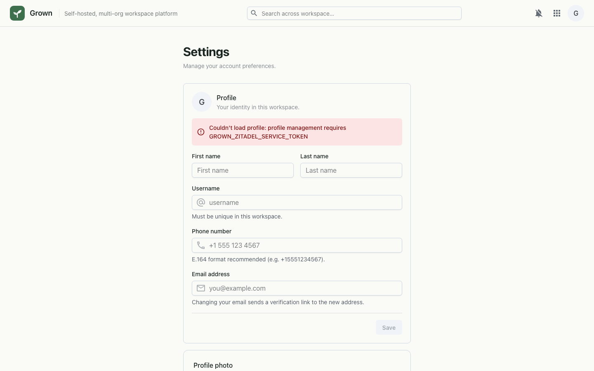

Your personal control panel — manage your profile and photo, mint scoped API tokens, and tune how the workspace looks and behaves for you.
Settings is where you manage your account — distinct from the org-wide Admin console. Edit your name, username, phone and email, upload an avatar, create personal API tokens for scripts and integrations, and set language, formats, appearance and notification preferences that follow you across the workspace.

Authorization: Bearer <token>). The full token is shown once — copy it then.Settings reads and writes your account over per-user endpoints
(/api/v1/me/*). Profile and email changes flow through Zitadel
— email changes stay pending until you verify the new address. Preferences
are saved server-side and applied app-wide (density, for instance, is set on
the page so components react immediately). API tokens are hashed; the raw
value is returned only once at creation.